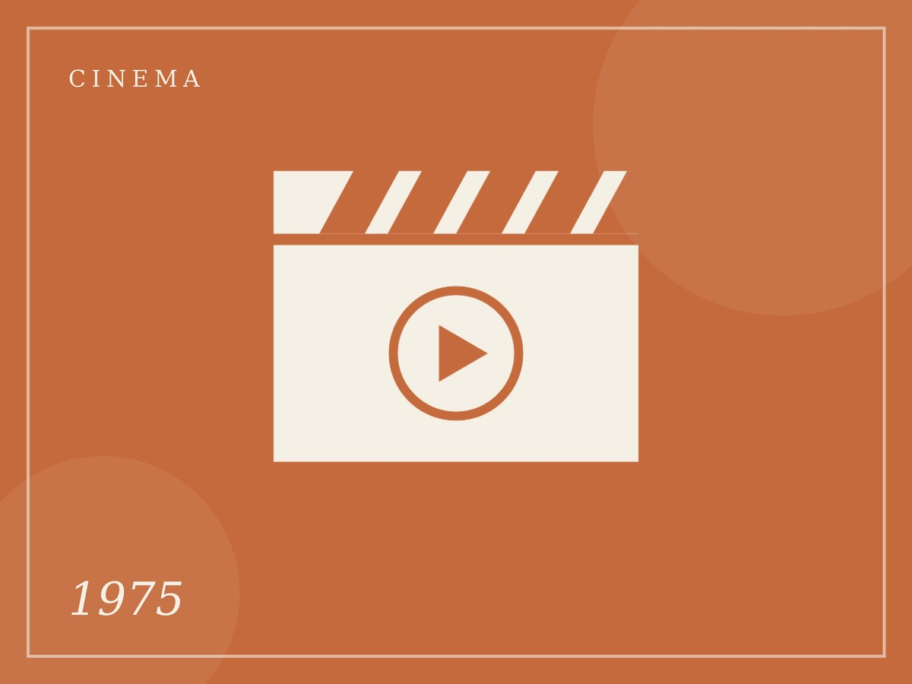
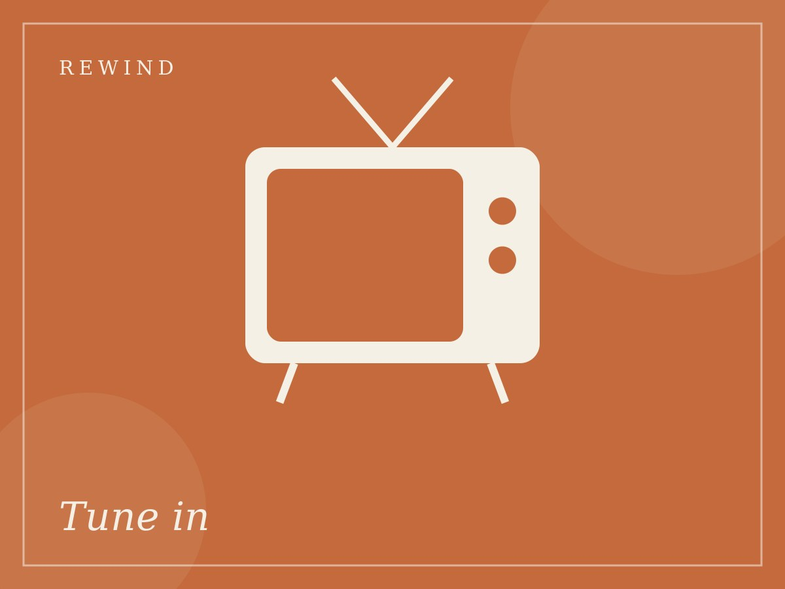
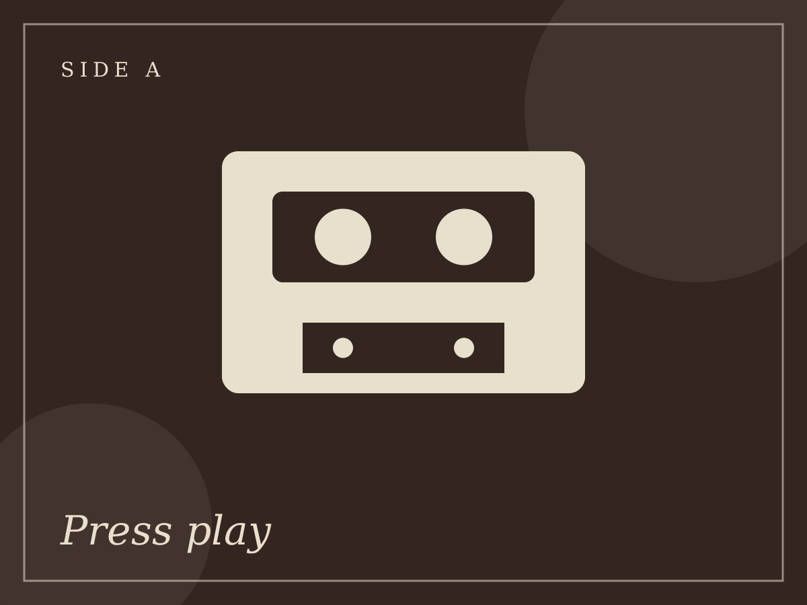
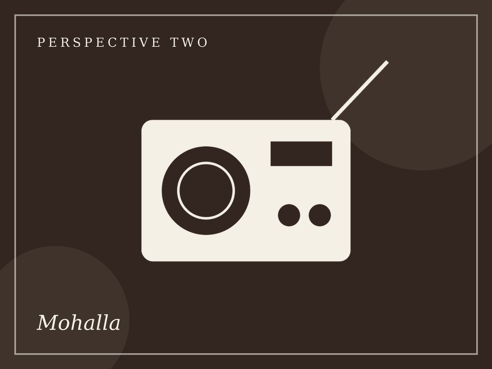
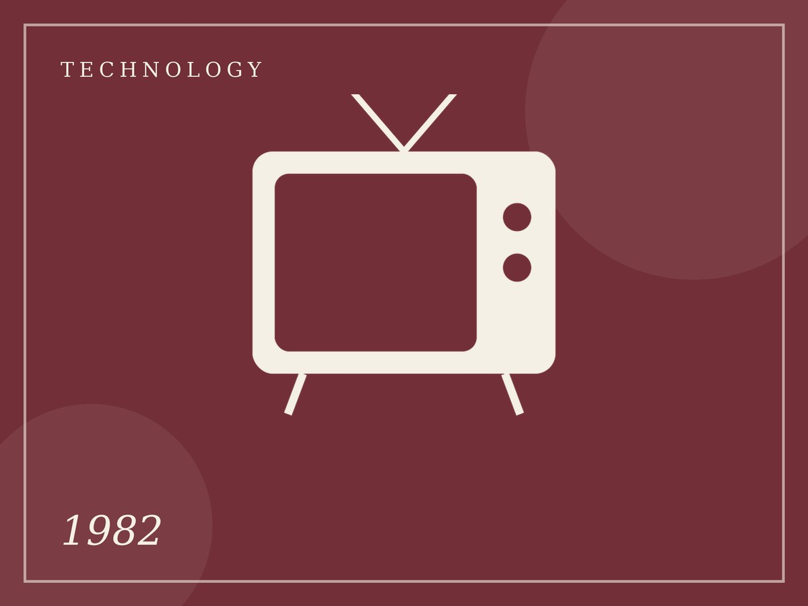
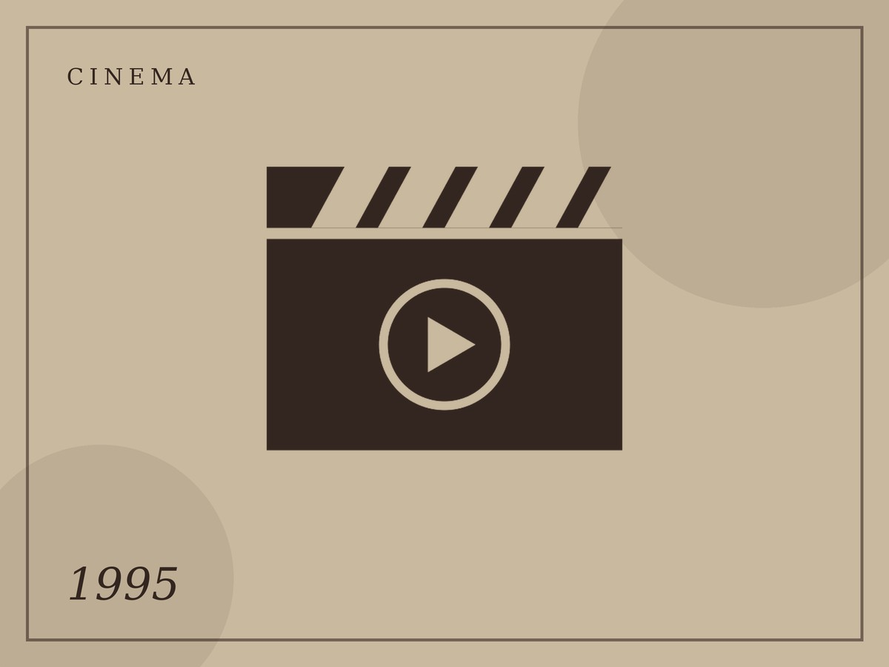
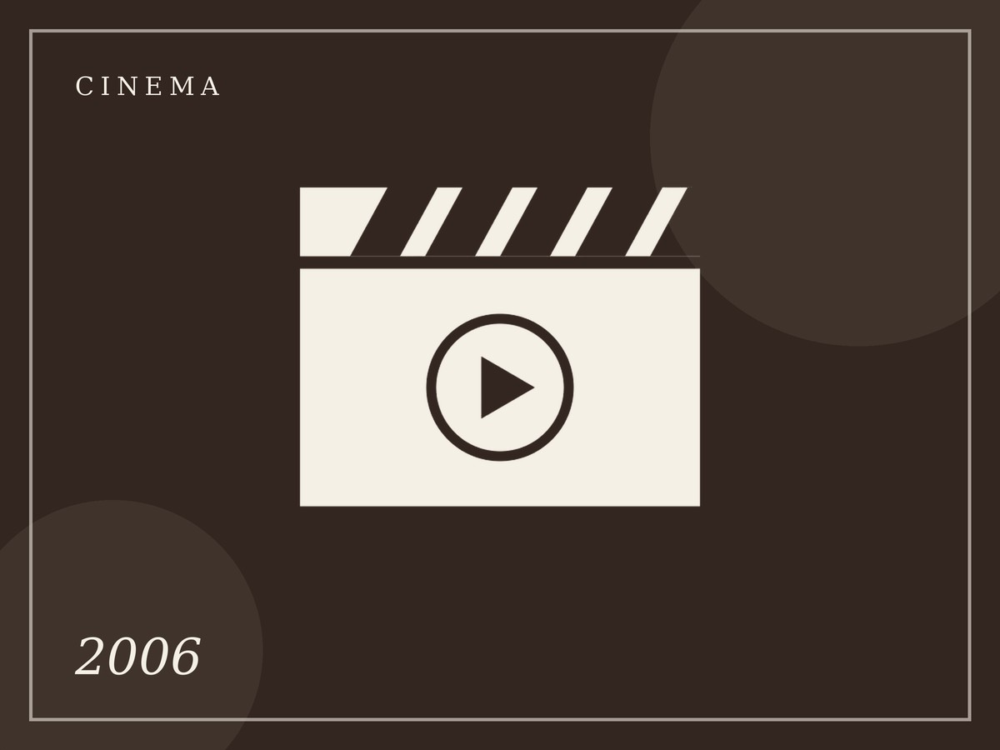

1975 · Cinema
Sholay hits cinemas
The action-adventure became one of Hindi cinema’s best-remembered films.
Issue No. 01 · A Journey Through Time
Some moments deserve to be relived.
RE/WIND is a vintage-style archive of India across four decades: the 1970s, 80s, 90s and 2000s. Flip through the music, cinema, television, fashion and gadgets that shaped everyday Indian life.
Explore the Decades →

Table of Contents
Perspective 01
Four decades of everyday joys, rewound.
Single-screen cinemas, Sunday-morning television, cassette stalls and cybercafés: the everyday joys that shaped generations at home.
CinemaTelevisionMusicGadgets
Perspective 02
Where the nation actually met.
Gully cricket, the yellow STD/PCO booth and the corner video library: the street-level rituals that turned every mohalla into a shared living room.
CricketPCO BoothsRadioMohalla

India, rewound, on every page.
From the Archive

1975 · Cinema
The action-adventure became one of Hindi cinema’s best-remembered films.

1982 · Technology
Colour broadcasts came in time for the Delhi Asian Games.

1995 · Cinema
A romance that stayed in Mumbai cinemas for over two decades.

2006 · Cinema
A film about friends and ideals that sparked youth conversations.